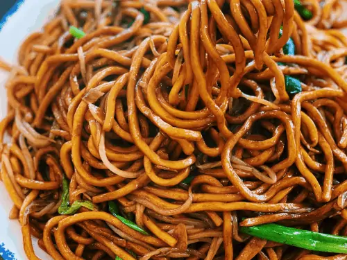

NOODLES

Description
I usually make these noodles at least once a week. They're quick, easy, delicious, and a great way to use up anything you might have in the fridge.
Ingredients
For two people, here's what you'll need:
- 2 packs of noodles (I like egg or udon noodles but any will do)
- 1 tablespoon of peanut oil
- A handful of greens (e.g. spinach or little gem lettuce
- 4 chopped spring onions or a sliced whole onion
- 2 cloves of sliced garlic
- A couple of handfuls of protein (e.g. tofu, sliced pork, minced beef, beaten egg)
- A tablespoon of soy
- A teaspoon of chilli oil
- A pinch of sugar
Steps
- Bring a pan of water to the boil for the noodles
- Whilst they're cooking, heat up a wok and add the peanut oil
- Fry the protein until it's browned and smelling good
- Throw in the onions and garlic and fry until they're soft and a bit translucent
- Add the soy sauce, chilli oil, and sugar
- Add the noodles and mix everything together
- Serve and eat immediately!